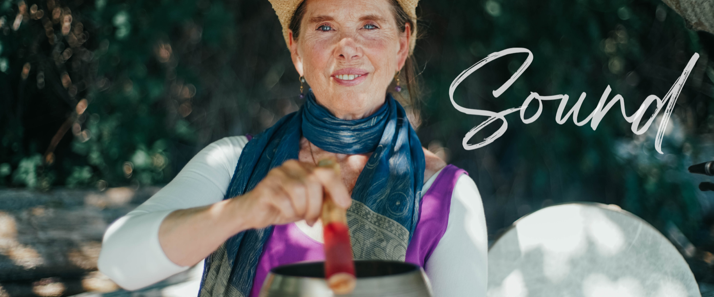

YOUR VOICE IS
expressing your true, wild self
As a kid, you sang and danced like a wild thing. Until they said, You're too much. Too loud. Too emotional. Out of tune.
If your voice got crushed, it's not your fault. Fear of not sounding 'right' keeps your throat chakra safely clamped down. No more!
As a singer, storyteller, and sound healer, I create playful spaces where your authentic voice can emerge without judgment. So you can sing your heart out – in community.
AWAKEN YOUR VOICE >Sound is an ancient portal to calm and well-being. Singing bowls and sound-healing modalities can relax and reset the overanxious nervous system.
Still, your own voice brings healing vibrations directly into your body. Your body loves the sound of your voice. It's simple. Always with you.
I share simple Vocal Sounding techniques to restore your calm center and release emotional residue. So you can come back home to yourself. Quickly.
SOUND BATHS & TRAINING >
You know in your bones that your voice – your truth, presence, and creative gifts – are medicine to balance this crazy world.
Still, it's brave to show up as your authentic true self. What if you don't belong? Facing this primal fear takes courage. Support.
Epigenetics reveals that old energies and fears are held in the body. Stories you inherited from ancestors, and past lives. For me, Sound is a portal to Akashic material. As we honor and clear it, you become more free to unleash your wild, true self. To fall madly in love with life on this Earth.
AKASHIC SOUL SESSIONS >When seven friends died too young, grief awakened my truth. Old trauma patterns held me back from showing up fully. But how to trust my soul – and sing?
I faced my shadows. Studied deeply with indigenous elders and sound healers. Embraced the scared little ones inside me with creative play.
Now I'm free to sing my wild love for water and Mama Earth. And to share the creative healing power of story through novels, oracle cards, and performance art.
EXPLORE STORIES >A weekly museletter — songs, stories & skills to call you back home to your true self. Includes a soothing sound bath near the sea. Paid subscribers also receive a monthly live Sounding session.